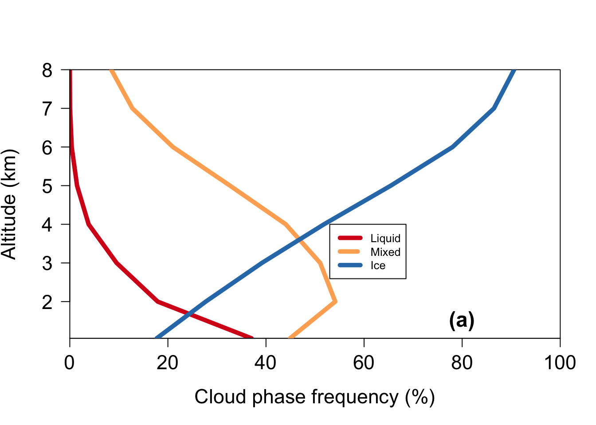

load("../../data/derived_data/fCliq.RData")
load("../../data/derived_data/fCmpc.RData")
load("../../data/derived_data/fCice.RData")Create Figure 1
Figure 1
This figure shows, over Arctic sea ice, (a) The likelihood of clouds at different altitudes being classified by CloudSat as either liquid, mixed, or ice phase, (b) the estimated dust-driven increases in cloud glaciation in different meteorological conditions, and (c) the meteorological and aerosol parameters that best predict how glaciation changes within meteorological bins, based on deviance explained in a generalized additive model.
Running Code
For Figure 1 you first load the following libraries:
For Figure 1a you then load the following datasets, which represent the fraction of liquid, mixed phase, and ice clouds in the study region/period:
We are going to plot the fractions at average altitudes of 1-8 km, and find the maximum values for the x-axis of Figure 1a:
alt<-1:8
xmax<-max(si_fCliq,si_fCmpc,si_fCice)Then we can look at the data for Figure 1 a:
plot(si_fCliq,alt,ty="l",col="#d7191c",xlim=c(0,100), lwd=5,yaxs="i",las=1,xaxs="i",cex.axis=1.4,cex.lab=1.4, ylab="Altitude (km)", xlab="Cloud phase frequency (%)")
points(si_fCmpc,alt,ty="l",col="#fdae61", lwd=5)
points(si_fCice,alt,ty="l",col="#2c7bb6", lwd=5)
legend(53, 4, legend=c("Liquid", "Mixed","Ice"), col=c("#d7191c", "#fdae61", "#2c7bb6"), lty=1:2, cex=0.8,lwd=5)
text(80,1.5, substitute(paste(bold('(a)'))), cex=1.5)
Next, we